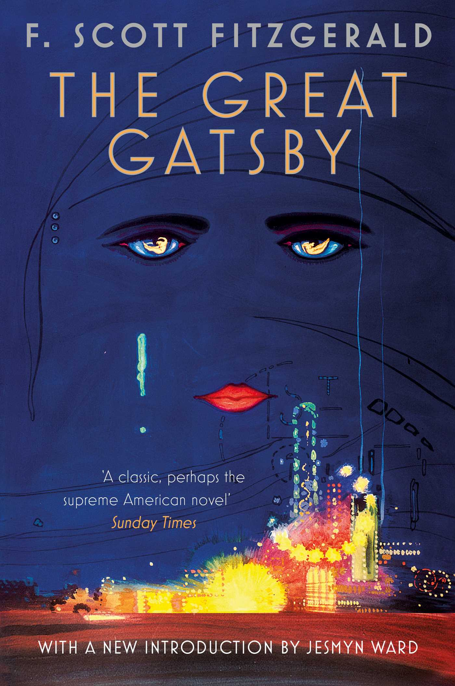
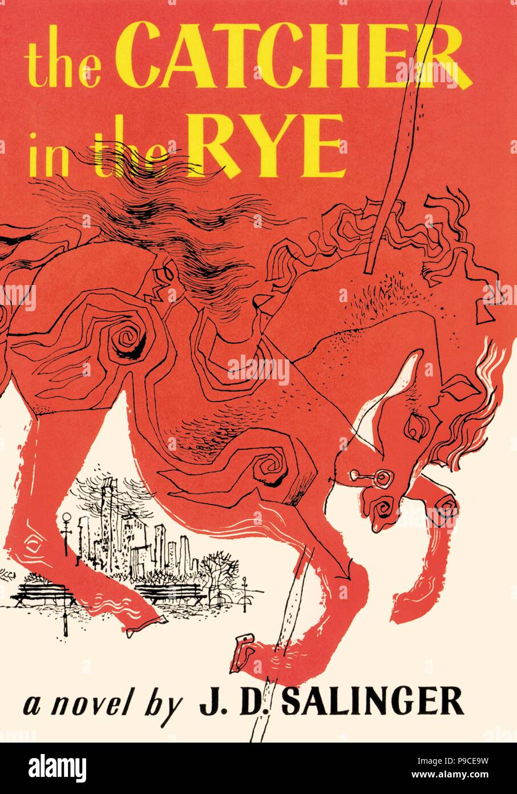

The Great Gats By
Author: F. Scott Fitzgerald
Rating: ★★★★☆
The Great Gatsby tells a very human story of wealth, dreams, and failure. F. Scott Fitzgerald takes the reader into the heart of the Jazz Age, in New York City, and into the world of Jay Gatsby. Through Nick’s narration, readers are exposed to the dangers of caring too much about the wrong thing and devoting themselves to the wrong ideal.
To Kill a Mockingbird

Author: Harper Lee
Rating: ★★★★★
To Kill a Mockingbird is Harper Lee’s literary masterpiece with commendable quality of universal appeal. It is a novel that can be enjoyed by everyone irrespective of age, race, or social class. The moral and intellectual value of the novel has made it have continued relevance for many decades after its publication.
1984

Author: George Orwell
Rating: ★★★★☆
“The best books... are those that tell you what you know already.” “If you want to keep a secret, you must also hide it from yourself.” “But if thought corrupts language, language can also corrupt thought.” “If you want a picture of the future, imagine a boot stamping on a human face—for ever.”
Pride and Prejudice

Author: Jane Austen
Rating: ★★★★★
From the day it found its place in print till now, it has been a more appealing novel to teenagers and to all the lovers of literature who loves romance. Pride and Prejudice is a character-driven narrative focuses on Elizabeth Bennet, the protagonist of the novel.
The Catcher in Rye
Author: J.D. Salinger
Rating: ★★★★☆
Today, the novel is taught in high school classrooms around the world, with students relating to a variety of levels to Holden’s mental conflict, angst, and difficulty adjusting to adulthood.